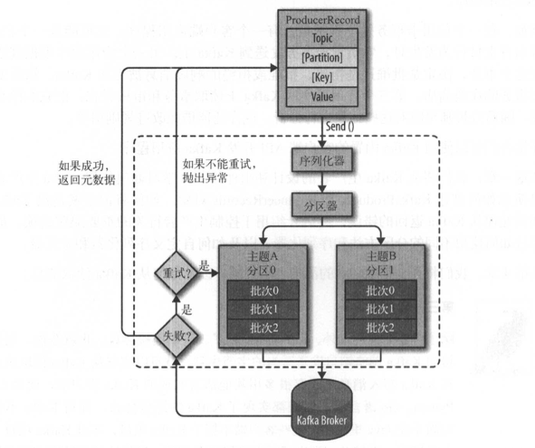
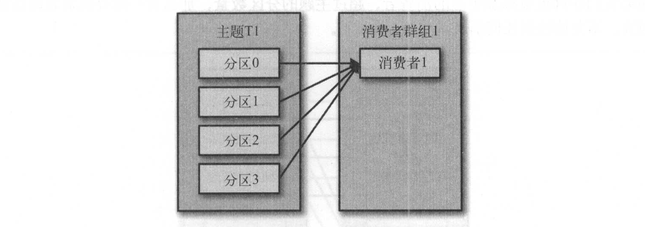
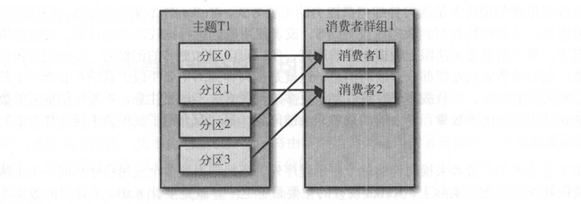
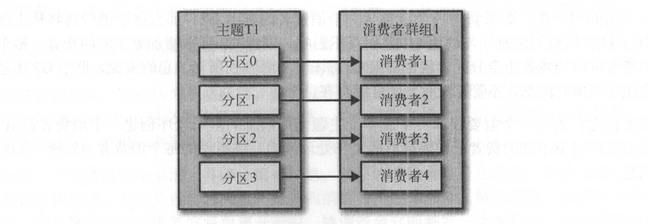
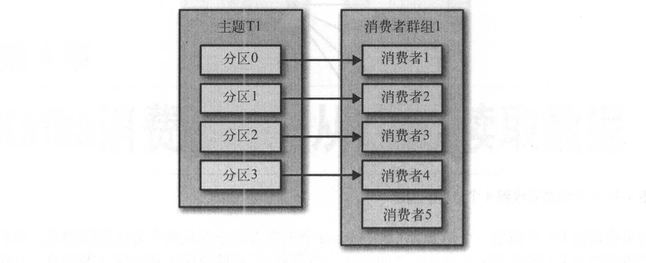
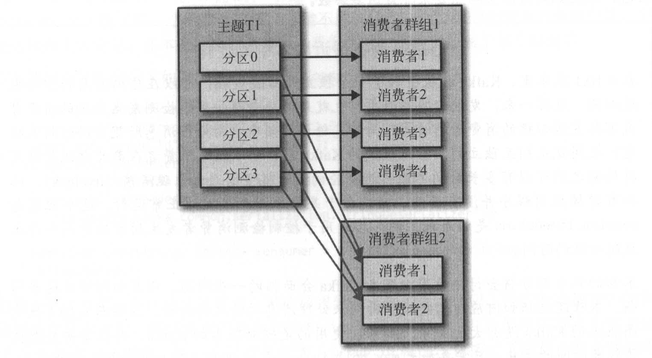

Kafka生产者和消费者
在 Kafka 简介中我们简单了解了 kafka，本篇文章会介绍生产者和消费者的一些详细情况。
生产者
创建生产者
如果要向 kafka 写入消息，首先要创建一个生产者对象，并设置一些属性，其中有三个必选属性：
bootstrap.servers：指定集群中 broker 地址清单，格式是
host:port，清单里不必包含集群中所有的 broker，因为每个 broker 都有整个集群所有 broker 的元信息，但是为了可用性，建议提供至少两个 broker 的信息。key.serializer：消息 key 的序列化器，因为 kafka 接收消息的 key 和 value 都是字节数组，所以发送时需要对 key 进行序列化。如果使用原生的 Java 客户端 kafka-clients，则这个属性必须指定，最常用的序列化器是
org.apache.kafka.common.serialization.StringSerializer，用来序列化字符串；如果在 Spring Boot 中使用 kafka，则这个属性默认就是org.apache.kafka.common.serialization.StringSerializer，可以不显示指定。value.serializer：消息 value 的序列化器，和 key.serializer 一样，最常用的序列化器是
org.apache.kafka.common.serialization.StringSerializer。
下面我们使用原生客户端创建一个生产者：
Properties properties = new Properties();
properties.put("bootstrap.servers", "broker1:9092,broker2:9092");
properties.put("key.serializer", "org.apache.kafka.common.serialization.StringSerializer");
properties.put("value.serializer", "org.apache.kafka.common.serialization.StringSerializer");
KafkaProducer producer = new KafkaProducer<>(properties);
发送消息
实例化生产者后就可以发送消息了，发送消息主要有如下三种方式：
发送并忘记
这是最简单的一种方式，把消息发送给服务器，并不关心消息是否已经正确到达。大多数情况下消息会正确到达，不过有时也会丢失一些消息。
ProducerRecord<String, String> record = new ProducerRecord<String, String>("topic", "key", "value");
try {
producer.send(record);
} catch (Exception e) {
// do something
}
同步发送
send 方法发送消息时会返回一个 Future 对象，调用 get() 方法进行等待，就可以知道消息是否成功。
ProducerRecord<String, String> record = new ProducerRecord<String, String>("topic", "key", "value");
try {
producer.send(record).get();
} catch (Exception e) {
// do something
}
如果消息发送成功，则 get() 方法返回一个 RecordMetadata 对象，可以用它获取偏移量；如果服务器返回错误，则 get() 方法会抛出异常。
KafkaProducer 一般会发生两类错误：
- 一类是可重试错误，这类错误客户端可以配置成自动重试一定次数，多次重试无法解决则抛出重试异常，这类错误比如连接异常。
- 另一类不可重试错误，这类错误无法通过重试解决，比如“消息太大”异常等。
异步发送
同步发送会显著降低生产者的发送效率，解决这个问题可以使用多线程同时发送，或者使用异步发送的方式，或者两者结合使用。异步发送需要我们在发送时指定回调方法。
ProducerRecord<String, String> record = new ProducerRecord<String, String>("topic", "key", "value");
try {
producer.send(record, (metadata, exception) -> {
if (exception != null) {
// do something
}
});
} catch (Exception e) {
// do something
}
客户端发送消息过程
尽管生产者 API 使用起来很简单，但消息的发送过程还是有点复杂，下图展示了向 Kafka 发送消息的主要步骤：

- 首先创建一个 ProducerRecord 对象，ProducerRecord 对象至少需要包含 Topic 和 Value，还可以指定 Key 和 Partition。
- ProducerRecord 对象会被序列化器序列化成字节数组，以便在网络上传输。
- 接下来数据会被发送到分区器，分区器会把消息按照一定规则分配到某个分区，具体请参考下一节。
- 分配好分区后，消息会被添加到一个批次里，同一个批次的所有消息会被发送到相同的主题和分区上，有一个独立的线程负责把批次里的消息发送到相应的 broker 上。
分区
消息经过分区器会被路由到不同的分区，一般情况下我们都是使用默认的分区器，那么此时消息路由到哪个分区主要考虑一下几个方面：
- 如果 ProducerRecord 对象里面指定了分区，则直接分配到对应的分区；
- 如果没有指定分区，且 key 为 null，那么消息会被随机地（使用轮询算法）分配到主题所有可用的分区上；
- 如果没有指定分区，且 key 不为 null，那么默认分区器会计算 key 的散列值，然后根据散列值将消息映射到特定的分区上。这里需要注意的是，同一个 key 总是会映射到同一个分区上，所以在进行映射时会使用主题的所有分区，而不只是可用分区。
生产者的配置
上文我们说了构建一个生产者至少需要提供三个配置，其实生产者还有很多可配置的参数（完整列表），它们大部分拥有合理的默认值，我们不需要指定，但是有一些配置比较重要，这里我们单独拎出来介绍一下。
acks
acks 参数指定了必须有多少个分区副本收到消息，生产者才会认为消息写入是成功的。该参数有三个选项0、1、all，默认值是 1 。
0：表示生产者不需要服务端的响应1：表示消息只要被首领副本接收到，生产者就会收到服务器的成功响应。all：所有参与复制的副本都接收到消息，生产者才会收到服务器的成功响应。
buffer.memory
生产者内存缓冲区的大小（默认值是 33554432，单位 byte），用来缓冲需要发送到服务器的消息。如果应用程序发送消息的速度超过发送到服务器的速度，则会导致缓冲区空间不足，这时候 send() 方法会被阻塞，如果阻塞时间超过max.block.ms就会抛出异常，max.block.ms 默认值是 60000。
compression.type
消息的压缩方式，可选项是 null、snappy、gzip、lz4、zstd，默认是 null，也就是不压缩。压缩会消耗更多的 CPU，但是会降低网络开销和存储开销。
retries 和 delivery.timeout.ms
生产者在收到可重试错误时重试的次数，默认值是 2147483647。默认情况下，生产者在每次重试之间等待 100ms，不过可以通过 retry.backoff.ms 参数改变这个时间间隔。
注意重试可能会破坏消息发送的顺序，比如消息1先发送，消息2后发送，但是由于消息1发送失败需要重新发送反而比消息2后到达服务器。
一般情况下，我们不建议通过 retries 参数来控制消息的重试，而是通过 delivery.timeout.ms 参数控制消息的超时时间，超过这个时间后，即使重试次数没有达到配置的值，消息也会放弃重试，抛出异常。
max.in.flight.requests.per.connection
这个参数表示生产者在接收到服务器的响应之前可以发送多少个消息，默认值是 5。它的值越高就会占用越多的内存，但是也会提高吞吐量。
上面我们说到重试可能会破坏消息的发送顺序，如果把 max.in.flight.requests.per.connection设为 1 就可以保证消息是按发送的顺序写入服务器的，但是这样会严重影响生产者的吞吐量。
batch.size 和 linger.ms
在客户端发送消息过程，我们提到当有多个消息需要发送到同一个分区时，生产者会把他们放在同一个批次里，该参数指定了一个批次可以使用的最大内存，默认值 16384，单位 byte。
当批次被填满，批次的消息会被发送出去。但是注意，生产者并不一定等到批次填满才会发送消息，而是等待linger.ms 后，即使批次没满，消息也会发送出去。linger.ms 的默认值是 0，也就是不等待。把 linger.ms 设置成比 0 大的值，会增加消息的延时，但也会提升吞吐量。
消费者
创建消费者
创建消费者和创建生产者类似，需要指定三个必要属性 bootstrap.servers、key.deserializer、value.deserializer，这三个属性的具体含义这里就不再解释了。另外还有一个属性 group.id 虽然不是必需的，但是建议填写，它指定了消费者属于哪个群组。
Properties properties = new Properties();
properties.put("bootstrap.servers", "broker1:9092,broker2:9092");
properties.put("key.deserializer", "org.apache.kafka.common.serialization.StringDeserializer");
properties.put("value.deserializer", "org.apache.kafka.common.serialization.StringDeserializer");
properties.put("group.id", "myGroup");
KafkaConsumer<String, String> consumer = new KafkaConsumer<String, String>(properties);
订阅主题
创建好消费者之后，需要告诉消费者订阅哪个或哪些主题，以便获取消息。
consumer.subscribe(Arrays.asList("topic"));
轮询
消息轮询是消费者 API 的核心，一旦消费者订阅了主题，轮询就会处理所有的细节，包括群组协调、分区再均衡、发送心跳和获取数据。
try {
while (true) {
ConsumerRecords<String, String> records = consumer.poll(Duration.ofMillis(100));
for (ConsumerRecord<String, String> record : records) {
log.info(record.value());
}
}
} finally {
consumer.close();
}
提交偏移量
每次调用 poll() 方法时，消费者会使用已经消费过消息的最大偏移量作为初始偏移量向服务器请求数据，服务器会返回此偏移量以后的消息。偏移量由消费者持有、维护和更新，正常情况下这没有什么问题，但是一旦服务器重启，偏移量就会丢失；或者分区再均衡时，每个消费者负责消费的分区可能会有变化，此时本地维护的偏移量也会失去作用。因此，消费者需要把偏移量提交到某个地方，这样在需要时可以重新取回偏移量，继续消费。
消费者通过向一个叫做 _consumer_offset 的特殊主题发送消息来提交偏移量，消息里包含每个分区的偏移量，这样在需要时，消费者只需要读取每个分区最后一次提交的偏移量，然后从偏移量指定的地方继续消费。
理想是美好的，现实却是残酷的，消费者虽然可以通过提交偏移量来防止偏移量丢失，但是并不能保证提交的偏移量一定是准确的。比如，
- 提交的偏移量小于实际的偏移量，那么处于两个偏移量之间的消息就会被重复消费；
- 提交的偏移量大于实际的偏移量，那么处于两个偏移量之间的消息就会丢失。
可以看出提交偏移量的方式对消费者影响很大，因此 KafkaConsumer API 提供了多种方式来提交偏移量。
自动提交
自动提交是最简单的方式，如果 enable.auto.commit 被设置为 true，消费者每隔一段时间（默认 5s）会把从 poll() 方法获取到的最大偏移量自动提交，当然提交也是在 poll() 方法中进行的，消费者在每次轮询时检查是否该提交偏移量，如果是，那么会提交上一次轮询返回的最大偏移量。
自动提交虽然最简单，但是它采取先消费后提交的方式，分区再均衡时很有可能出现重复消费的情况。为了减少重复消费的时间窗口，我们可以通过减少提交间隔时间来实现，但也无法完全避免重复消费。
同步提交
如果不想使用自动提交而是由程序控制什么时候提交，可以把 enable.auto.commit 设置为 false，然后使用 commitSync() 同步提交，这种方式简单也很可靠。
try {
while (true) {
ConsumerRecords<String, String> records = consumer.poll(Duration.ofMillis(100));
for (ConsumerRecord<String, String> record : records) {
log.info(record.value());
}
try {
consumer.commitSync();
} catch (Exception e) {
log.error("commit fail", e);
}
}
} finally {
consumer.close();
}
commitSync() 会提交当前 poll() 返回的最大偏移量，只要不发生不可恢复的错误，commitSync() 会一直尝试提交直到成功。
但是同步提交的方式也存在问题，如果先消费消息后提交偏移量会存在重复消费的风险，如果先提交偏移量后消费消息会存在丢消息的风险。一般情况下丢消息更不可接受，因此我们都是先消费后提交偏移量。
异步提交
同步提交有一个不足之处，在服务器对提交作出响应之前，消费者程序会一直阻塞，这样会降低消费者的吞吐量。这时我们可以采用异步提交的方式，无需等待服务器的响应。
try {
while (true) {
ConsumerRecords<String, String> records = consumer.poll(Duration.ofMillis(100));
for (ConsumerRecord<String, String> record : records) {
log.info(record.value());
}
consumer.commitAsync();
}
} finally {
consumer.close();
}
注意 commitAsync() 如果提交失败，它是不会重试的，因为此时有可能一个更大的偏移量已经提交。
同步和异步组合提交
一般情况下，偶尔提交失败不进行重试不会有太大问题，因为如果提交失败是由临时问题导致的，那么后续提交总会有成功的，但是如果这是关闭消费者或者再均衡前的最后一次提交，就要确保能够提交成功。
try {
while (true) {
ConsumerRecords<String, String> records = consumer.poll(Duration.ofMillis(100));
for (ConsumerRecord<String, String> record : records) {
log.info(record.value());
}
consumer.commitAsync();
}
} finally {
try {
consumer.commitSync();
} finally {
consumer.close();
}
}
消费者和消费者群组
创建消费者时，我们建议要指定消费者群组，同一个群组内的消费者订阅的是同一个主题，每个消费者接收主题一部分分区的消息。
一个消费者群组
假设主题 T1 有 4 个分区，我们创建了一个消费者 C1，它是群组 G1 里唯一的消费者，当 C1 订阅 T1 是，T1 的 4 个分区都将分配给 C1 消费。

如果一个消费者消费速度太慢，我们往群组 G1 增加另一个消费者 C2，那么 C1 和 C2 分别获得 2 个分区的消息。

如果群组 G1 内有四个消费者，那么它们每人可以分配到一个分区的消息。

如果我们继续往群组内添加更多的消费者，超过主题分区的数量，那么会有一部分消费者分配不到任何分区，就会被闲置。

往群组增加消费者是横向伸缩消费能力的主要方式，但是消费者数量受到分区数量的限制，所以我们要合理地为主题设置分区数量，防止分区数量太少造成消费能力不足。
多个消费者群组
kafka 主题内的消息可以被多个消费者群组共享，多个群组之间互相并不影响。比如此时增加一个群组 G2，其含有 2 个消费者，那么 G2 也能获取主题内的所有消息。

分区再均衡
当群组内增加或者减少消费者时，会造成分区重新分配，这样的行为称为再均衡。再均衡非常重要，它为消费者群组带来了高可用性和伸缩性。但是再均衡期间，消费者无法读取消息，造成整个群组一小段时间不可用。
当消费者要加入群组时，它会向群组协调器（某个活跃的 broker）发送一个 JoinGroup 的请求，第一个加入群组的消费者会成为群主。群主从协调器那里获取群组的成员列表并负责给每一个消费者分配分区，分配完毕后，群主把分配情况发送给协调器，协调器再把这些信息发送给所有的消费者。
消费者的配置
在使用消费者时，我们已经介绍了消费者必须的四个配置属性，其实生产者还有很多可配置的参数（完整列表），它们大部分拥有合理的默认值，我们不需要指定，但是有一些配置比较重要，这里我们还是单独拎出来介绍一下。
fetch.min.bytes 和 fetch.max.wait.ms
fetch.min.bytes 表示消费者从服务器获取的最小字节数，它的默认值是 1。服务器在收到消费者的请求时，如果数据量小于 fetch.min.bytes，那么他会等到有足够多的可用数据时才会返回。把次参数设置的大一点可以降低服务器的负载。
如果 fetch.min.bytes 设置的很大一直得不到满足，服务器也并不会一直等待不返回，而是最多等待 fetch.max.wait.ms（默认值 500） 后就会返回。
max.partition.fetch.bytes
该属性指定了服务器从每个分区里返回给消费者的最大字节数，默认是 1048576。
max.poll.records
该属性指定了 poll() 方法每次返回的最大消息条数，默认值 500。
auto.offset.reset
该属性指定了消费者在读取一个没有偏移量或者偏移量无效的分区时应该如何处理，它有如下几个可选项：
none：抛出异常earliest：从分区的最小偏移量开始消费latest：从分区的最大偏移量开始消费
默认值是 latest，也就是只消费加入群组后新增的消息。
session.timeout.ms
该属性指定了消费者被认为死亡前可以与服务器断开连接的时间，默认是 10000。
序列化器
在本篇文章的前面我们使用的都是默认的字符串序列化器，除此之外 kafka 还提供了其他基本类型的序列化器，不过它们还不足以满足大部分场景的需求。
自定义序列化器
如果 kafka 提供的序列化器不能满足我们的需求，我们可以选择自定义序列化器。自定义序列化器需要实现 org.apache.kafka.common.serialization.Serializer接口，但是实现的自定义序列化器往往并不通用，因此并不建议使用自定义序列化器，而是使用一些广泛使用的序列化器，比如 JSON、Avro、Thrift等。
使用 Avro 序列化
Apache Avro 是一种与编程语言无关的序列化格式，Avro 数据通过与语言无关的 schema 来定义，schema 通过 JSON 来描述，数据会被序列化成二进制文件或 JSON 文件，不过一般会使用二进制文件。
使用 Avro 的好处是如果生产者修改了发送数据的 schema，只要新的 schema 兼容 旧的 schema，那么消费者是不需要任何改动的。
消费者在消费 Avro 消息时，必须要知道 schema 才能反序列化，为了解决这个问题，kafka 使用了一种叫“schema 注册表”的组件。生产者把 schema 注册到注册表，并在发送消息时带上 schema_id，消费者通过 schema_id 从注册表中获取对应的 schema， 然后用来反序列化。
kakfa 自己并没有实现 schema 注册表，现在已经有了不少开源的实现，比如 confluent schema registry。
生产者使用 Avro
Properties properties = new Properties();
properties.put("bootstrap.servers", "broker1:9092,broker2:9092");
properties.put("key.serializer", "io.confluent.kafka.serializers.KafkaAvroSerializer");
properties.put("value.serializer", "io.confluent.kafka.serializers.KafkaAvroSerializer");
properties.put("schema.registry.url", "schema url");
KafkaProducer producer = new KafkaProducer<>(properties);
消费者使用 Avro
Properties properties = new Properties();
properties.put("bootstrap.servers", "broker1:9092,broker2:9092");
properties.put("key.deserializer", "io.confluent.kafka.serializers.KafkaAvroDeserializer");
properties.put("value.deserializer", "io.confluent.kafka.serializers.KafkaAvroDeserializer");
properties.put("group.id", "myGroup");
KafkaConsumer<String, String> consumer = new KafkaConsumer<String, String>(properties);
参考文档
- 《Kafka权威指南》
本作品采用知识共享署名 4.0 国际许可协议进行许可，转载请注明原文链接
本文链接：https://schhx.github.io/2019/04/05/Kafka生产者和消费者/